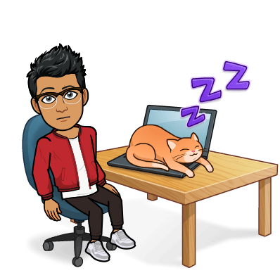

I do many activities, in and out of school! I participate in Code++ Club, Development Club, Machine Learning Club, and Sports Statistics Club! I also am one of the social media coordinators and am a mentor for Codefy, a nonproft computer science tutoring program!
